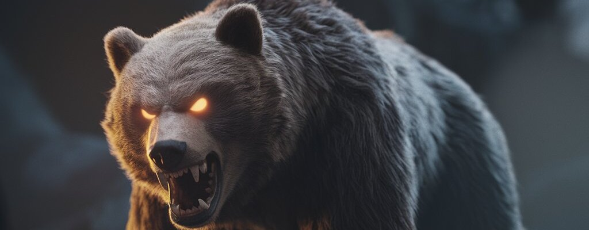
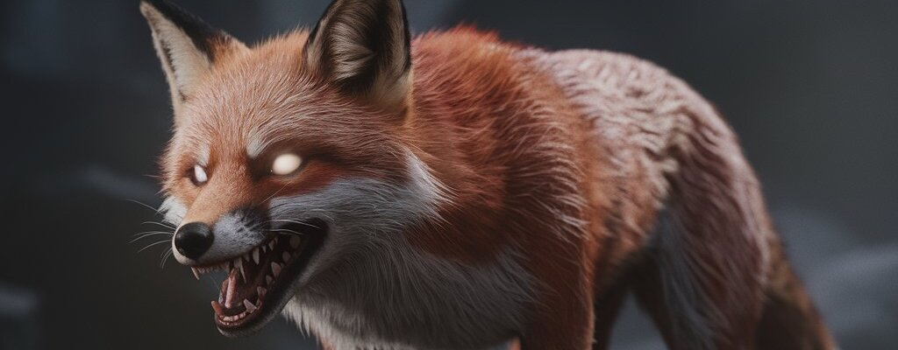
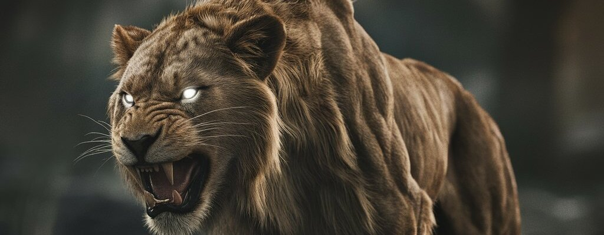

Gigante da floresta
O urso é um mamífero poderoso e imponente, adaptado a diversos habitats. Sua força e tamanho o tornam um predador temido, mas muitos ursos são onívoros e se alimentam de plantas e frutas.

Símbolo de astúcia e esperteza
Na cultura popular, a raposa é frequentemente associada à astúcia, à esperteza e à adaptabilidade.
Símbolo de força e lealdade
Na cultura popular, o lobo representa força, lealdade e liberdade. Apesar de sua reputação feroz, os lobos são animais sociais com laços familiares profundos.

Símbolo de força e lealdade
Na cultura popular, o lobo representa força, lealdade e liberdade. Apesar de sua reputação feroz, os lobos são animais sociais com laços familiares profundos.